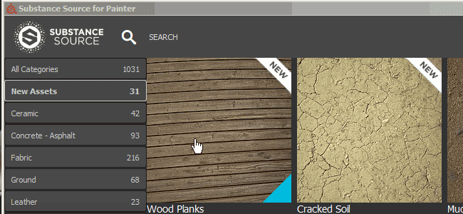
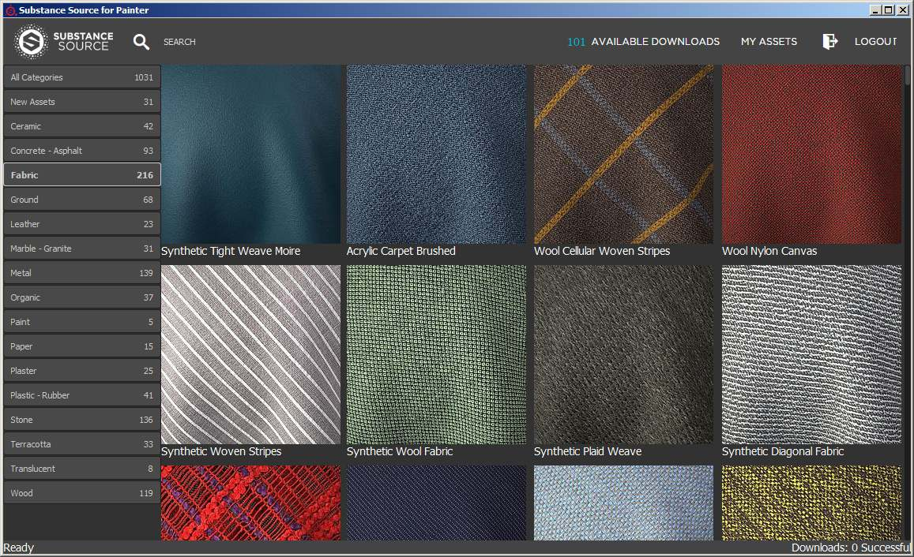
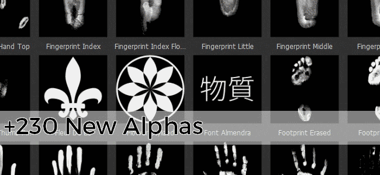
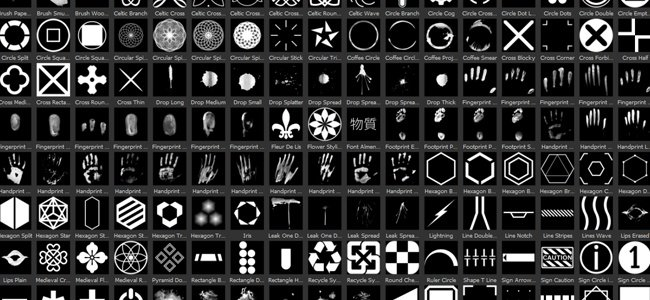
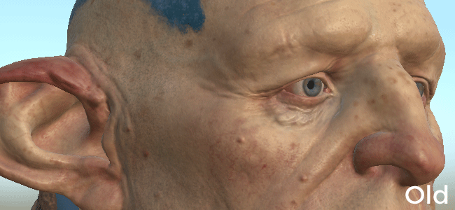

Substance Painter changes its versioning number following the new Substance offer. For more details check out : https://www.allegorithmic.com/welcome-to-substance
In this new version we wanted to focus on the content by providing a new plugin that allow to browse Substance Source and import materials directly into the shelf. We also added a lot of new assets to expand your creative possibilities.
Release Date : 20 June 2017

With this new plugin it is now possible to directly browse our database of materials called Substance Source and download them directly into the shelf, ready to use and ready to work in your projects.
To open Substance Source, simply click on the Substance Source logo in the main toolbar of the application. This should open a new window allowing to browse the library.


In this new version we are adding more than 300 new assets. We added sci-fi, geometric, medieval, or even Celtic themed content in the alphas. It also includes a lot of new brushes and scanned handprints/fingerprints. We also provide some handy new filters such as the MatFX Detail Edge Wear which allow to generate scratches directly from the normal information painted on your mesh.
Here is the list of the new content :

We also updated some of the existing assets to make them work better, such as the default environment map which now look less yellow :

The new content is covered in our latest video tutorial :
(Released 20 June 2017)
Added :
[Plugin] New Substance Source plugin (allow to download assets in the shelf)
[Shelf] 4 New Fonts (Japanese + Simplified Chinese, Typewriter, Segment)
[Shelf] 230 New Alphas (Mix of patterns, brushes and fingerprint scans)
[Shelf] 50 New Procedurals (Fabric patterns of medieval and contemporary clothing)
[Shelf] 2 New environment maps (Mondarrain and Villa Nova Street)
[Shelf] 9 New filters (MatFx Detail Edge Wear, Clamp, HBAO, etc.)
[Shelf] Improved default Panorama environment map
[Shelf] New Arnold 5 export presets
[Scripting] Allow to import resource into the Shelf
Known Issue :
[Export] Editing an export preset is very slow